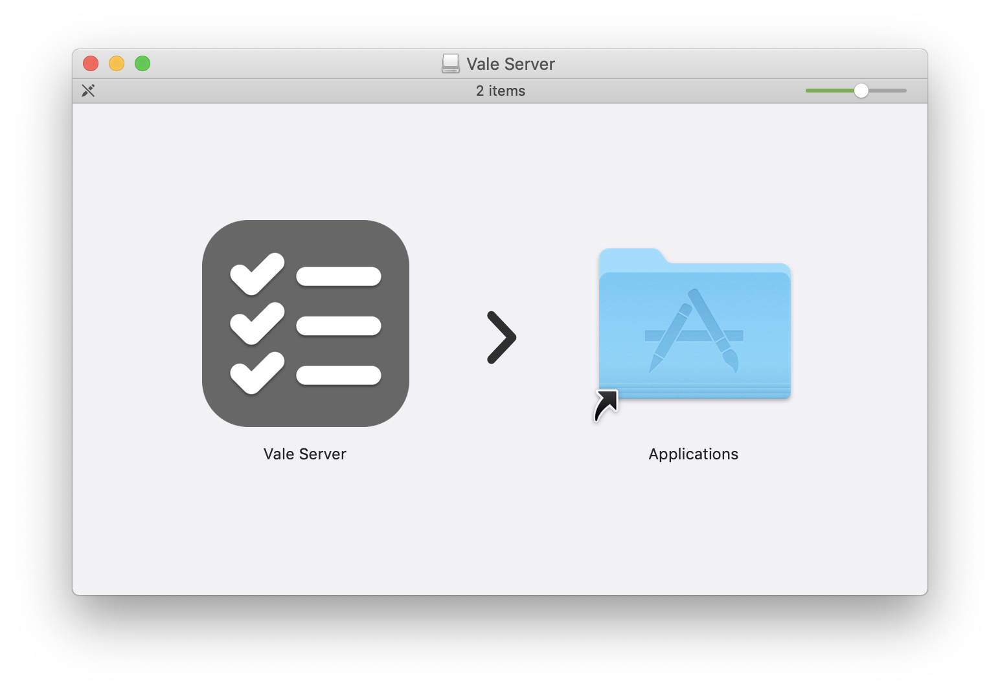
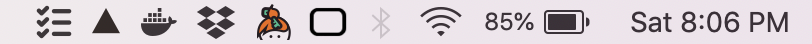
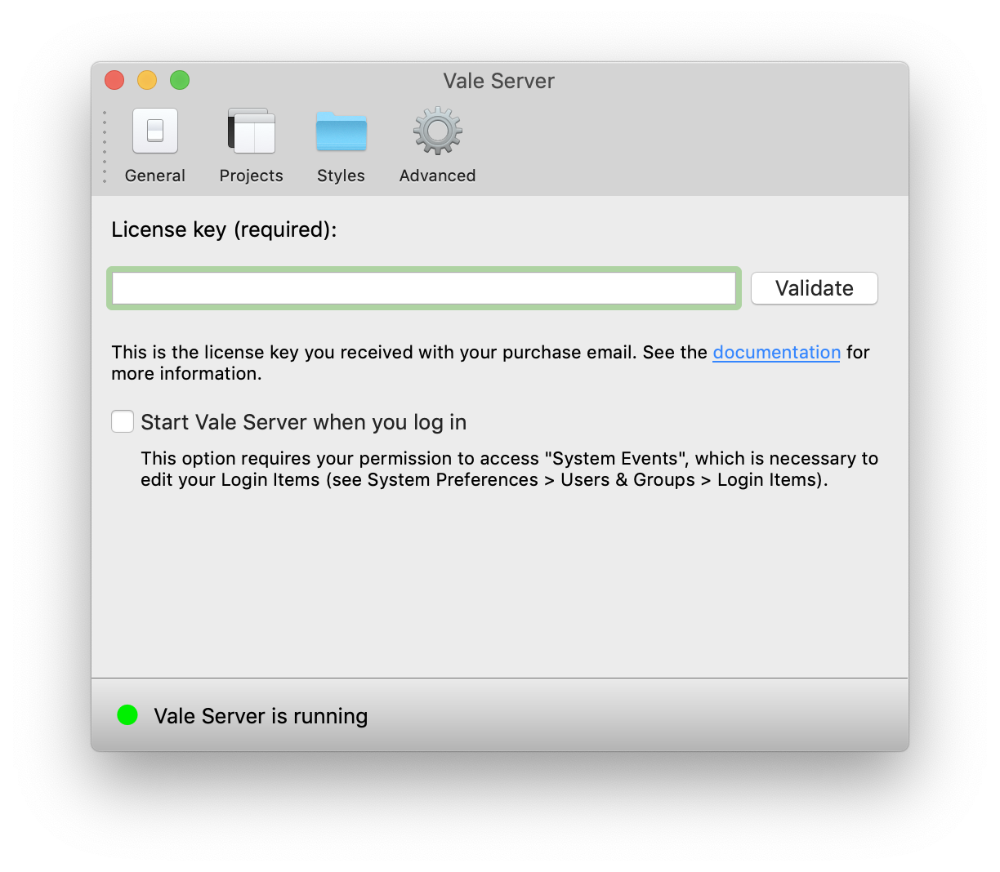
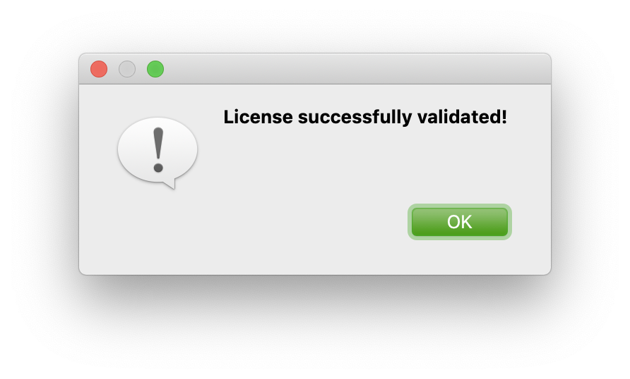
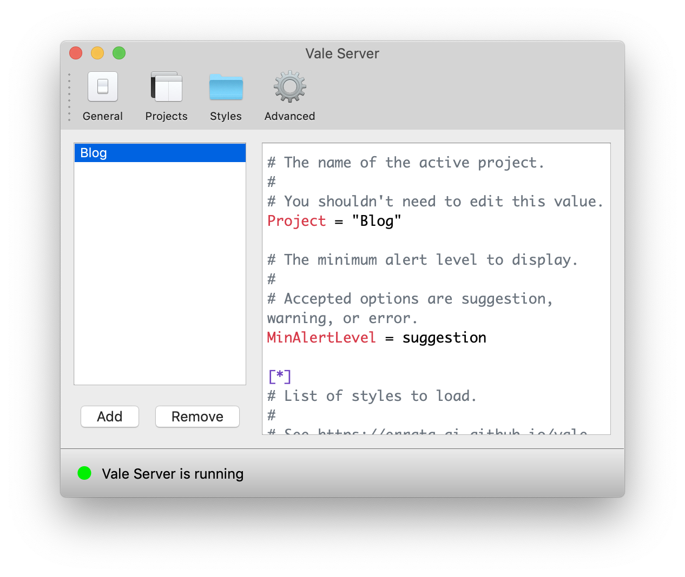
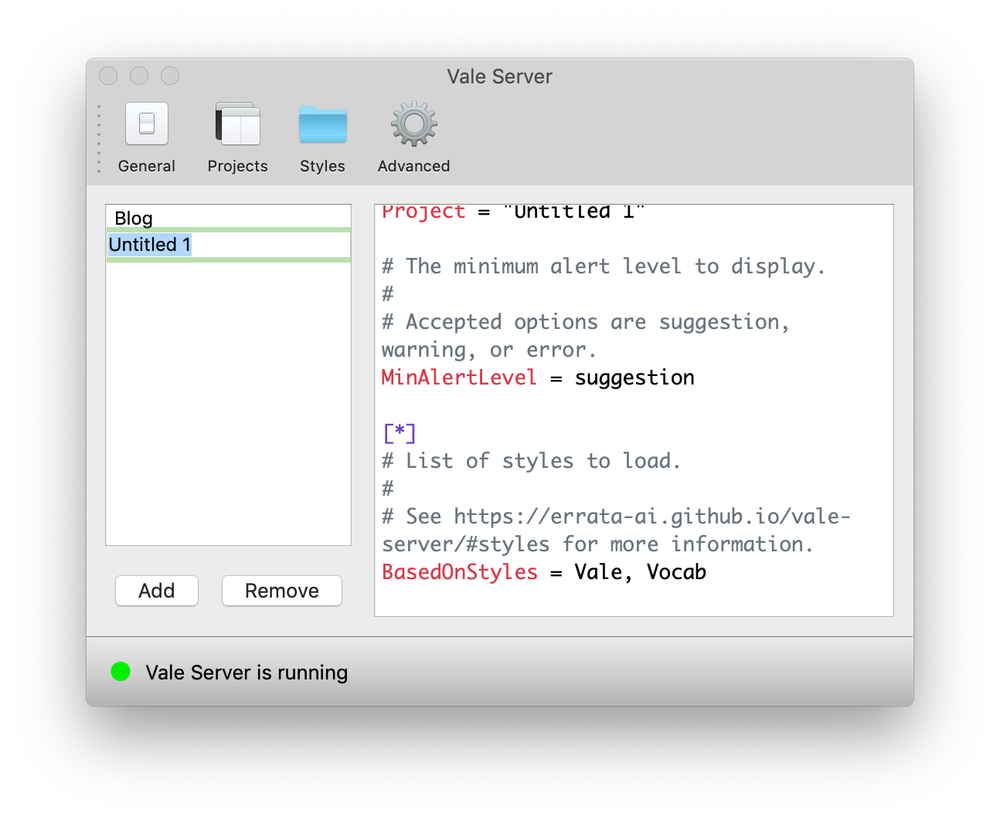
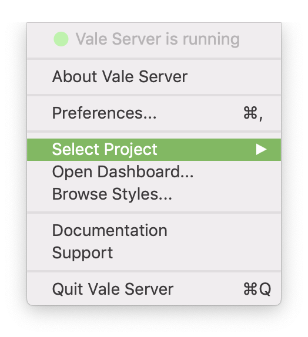
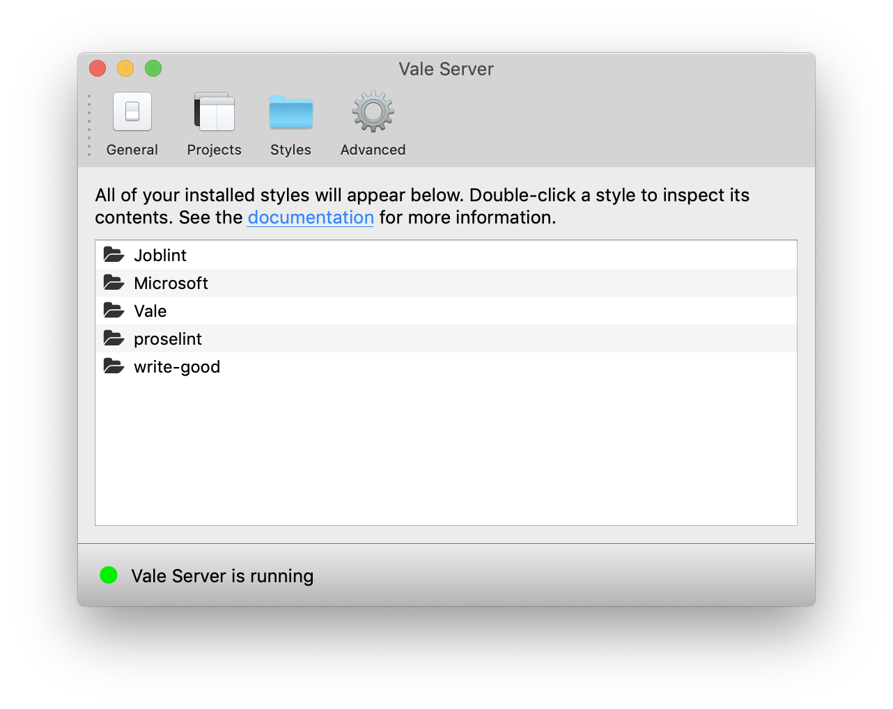
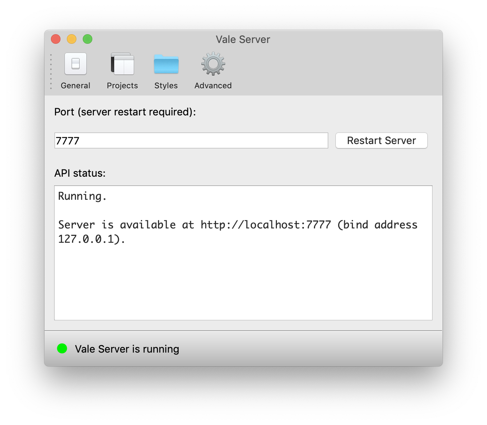
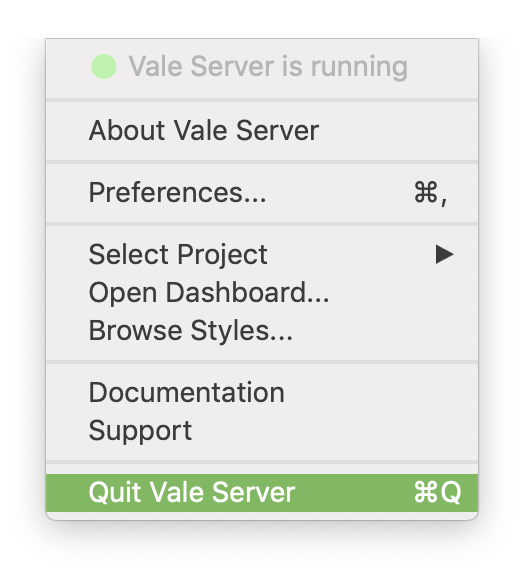

Get Started with Vale Server for Mac¶
Vale Server is a standalone desktop application for Vale, a linter for prose that emphasizes performance, privacy, and extensibility.
NOTE
Vale Server requires at least macOS Sierra 10.12.
Installation¶
Double-click Vale Server.dmg to open the installer, then drag the application
to the Applications folder.

When you open the application, Vale Server will launch in the background at
http://localhost:7777 (by default) and you will see its icon ()
in your menu bar:

Clicking this icon will open a menu that allows you to interact with the server.
Preferences¶
Choose Preferences from the menu bar and configure the run-time options described below.
General¶

The available options are:
- Enter your License Key: In order to use Vale Server, you need to enter a valid license key. You'll receive this key in your purchase confirmation email. If your key is valid, you'll see the following pop-up dialog:

- Start Vale Server when you log in: Check this option if you want Vale Server to start when you log in to your Mac.
Projects¶
Projects allow you to manage multiple Vale configuration files in one place. Each project has a name (the left panel) and an associated configuration file (the right panel):

To create a new Project, click "Add" and then double-click the new project to give it a name:

You can now edit the configuration file on the right to customize the new project. To remove a project, click its name and then click the "Remove" button.
After you've created and configured your projects, you can quickly switch between them by selecting Select Project:

Additionally, each project has an associated Vocabulary that you can manage via the Dashboard.
Styles¶
The Styles page provides quick access to all of your installed styles. You can add your own styles by selecting Browse Styles... and then copying the relevant files.

Vale Server ships with built-in styles for some of the most popular open-source writing tools and style guides:
-
Test tech job posts for issues with sexism, culture, expectations, and recruiter fails.
Writing a job post? Use Joblint to make your job attractive to a much broader range of candidates and ensure you're not being discriminatory.
Getting swamped in job posts? Use Joblint to filter out the bad ones.
-
Microsoft [source, documentation]:
A Vale-compatible implementation of the Microsoft Writing Style Guide.
-
Vale [source, documentation]:
The Vale style implements a spell checker that respects your custom Vocabulary.
-
proselint [source, documentation]:
proselintplaces the world’s greatest writers and editors by your side, where they whisper suggestions on how to improve your prose. -
write-good [source]:
Naive linter for English prose for developers who can't write good and wanna learn to do other stuff good too.
Advanced¶
The Advanced page allows you to configured the port that Vale Server will listen on:

Dashboard¶
Uninstallation¶
-
Select Quit Vale Server:

-
Open your Applications folder and drag the Vale Server application to the Trash.
-
Empty the Trash (optional).